2. Configuration
This section walks through all the configuration steps required to get ThousandEyes data flowing into Splunk ITSI.
1. Connection Setup
Authorize your ThousandEyes Account
- Go to Apps → Cisco ThousandEyes App for Splunk
- Click Configuration
- Click Add, then Authorize
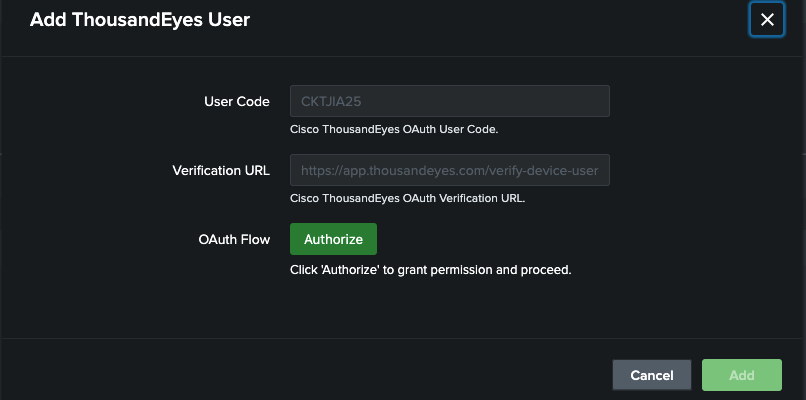
- A login screen will appear — sign in with your ThousandEyes credentials
- Confirm the authorization request
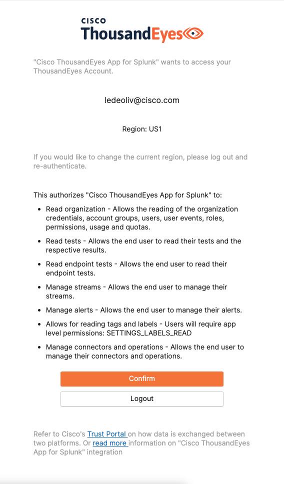
- Click add
✅ Your ThousandEyes account will be linked to the Splunk app.
2. Index Creation
Create a dedicated Splunk index to receive ThousandEyes data.
- In Splunk, go to Settings → Data → Indexes
- Click New Index
- Create an Events index with the following settings:
| Parameter | Value |
|---|---|
| Index Name | te_index |
| Index Data Type | Events |
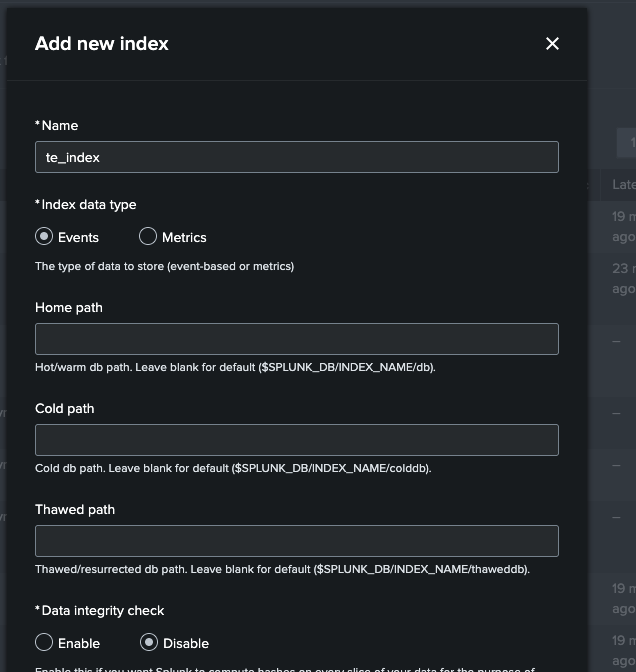
💡 Using a dedicated index (instead of
mainor a wildcard) ensures better performance and easier macro scoping later.
3. Token Creation
Create an HTTP Event Collector (HEC) token scoped to the te_index.
- In Splunk, go to Settings → Data → Data Inputs
- Select HTTP Event Collector
- Click New Token
- Configure the token:
| Parameter | Value |
|---|---|
| Token Name | te_token |
| Default Index | te_index |
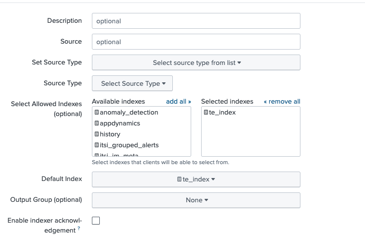
⚠️ Make sure your HEC endpoint uses a valid TLS certificate — self-signed certificates are not supported by the ThousandEyes App.
You can test your HEC connection with a curl command like this:
curl -k https://<HEC_ENDPOINT>>:<HEC_PORT>/services/collector/event \
-H "Authorization: Splunk <HEC_TOKEN>" \
-H "Content-Type: application/json" \
-d '{"event": "HEC connectivity test", "sourcetype": "hec_test"}'
- Examples
- HEC_ENDPOINT: https://i-098ba594a9f46aab8.splunk.show
- HEC_PORT: 8088
4. Inputs Configuration
Now that the connection, token, and index are ready, configure the data inputs that will pull data from ThousandEyes.
- Go to Apps → Cisco ThousandEyes App for Splunk
- Click Inputs, then Create New Input
-
Create three inputs as shown below:
-
Alerts Stream
- Tests Streams Metrics
- Tests Streams Traces
Inputs
For each input, fill in the following:
| Parameter | Value |
|---|---|
| Name | Teste name + your id |
| Account | Select your ThousandEyes user |
| Account Group | Select your Account Group |
| HEC Target | https://<your-splunk>:<hec-port>/services/collector/event |
Alerts Streams
Name it TE_ALERTS_YOURID EXAMPLE: TE_ALERTS_LEDEOLIV
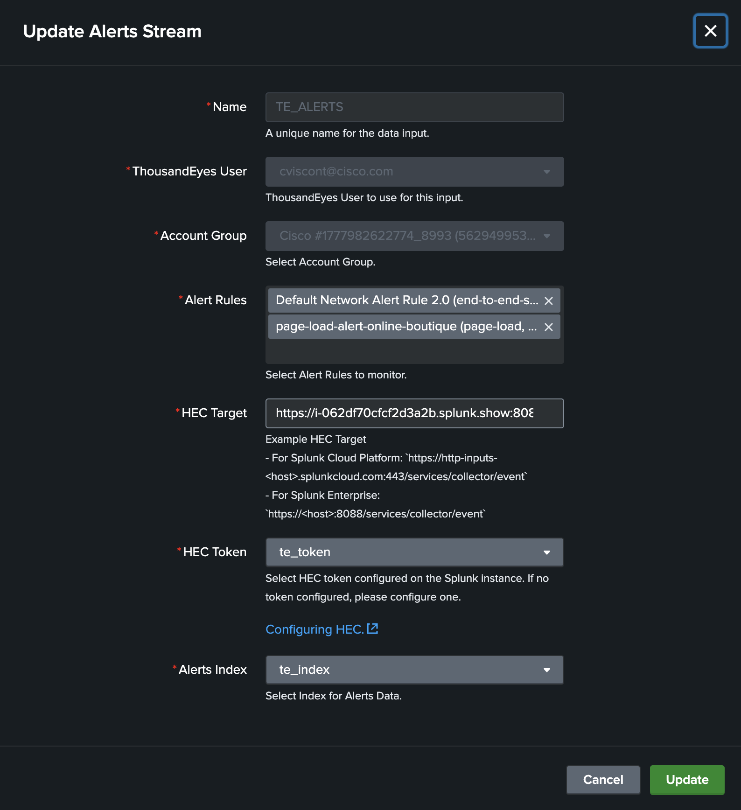
Make sure to add the test that was created previously by you
page-load-alert-online-boutique. The name should be something like ....-page-load-alert-online-boutique
Tests Streams Metrics
Name it TE_METRICS_YOURID EXAMPLE: TE_METRICS_LEDEOLIV
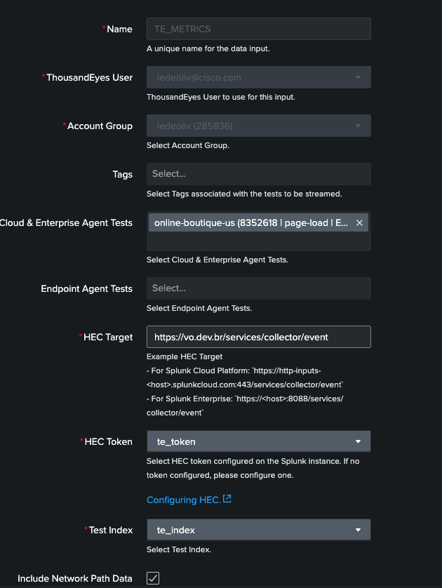
Tests Streams Traces
Name it TE_TRACES_YOURID EXAMPLE: TE_TRACES_LEDEOLIV
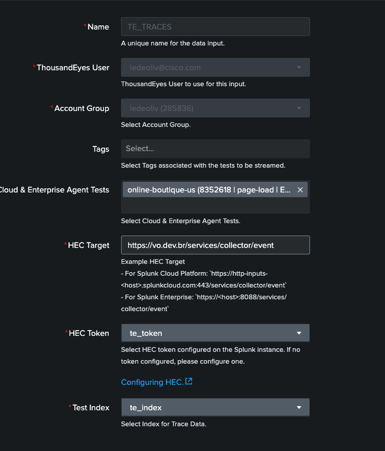
- After creating all three inputs, verify that they are all Active:
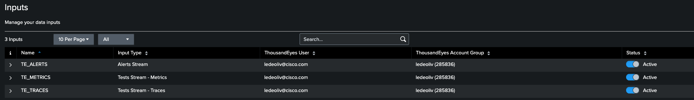
5. Updating Macros
⚠️ This step is critical. The app ships with macros that default to
index=*. For performance and best practices, you must update them to useindex=te_index.
Which Macros to Update
Search for all macros below except summariesolny and change index=* to index=te_index:
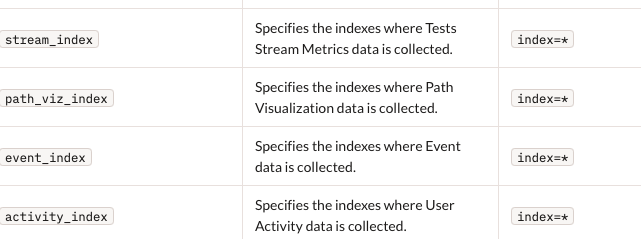
Also update the macro named itsi_cp_thousandeyes_index.
How to Edit a Macro
- In Splunk, go to Settings → Advanced Search → Search Macros
- Filter by the macro name
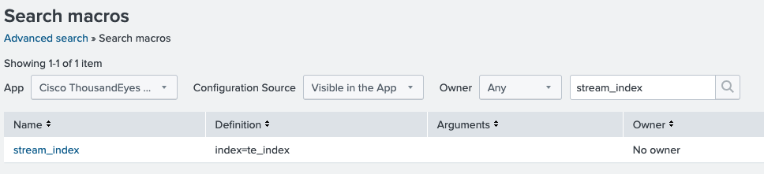
- Click the macro, edit the definition, and Save
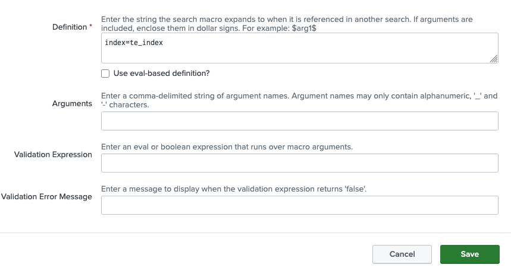
✅ After this step, all ThousandEyes searches will be properly scoped to
te_index.